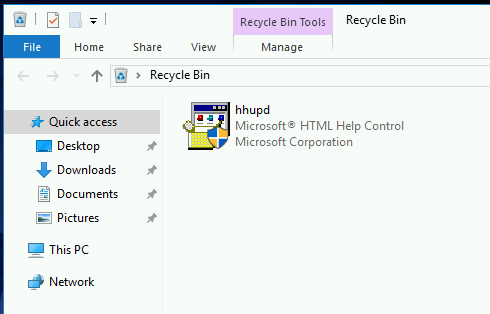

TryHackMe - Retro

Contenido
| Titulo | Retro |
|---|---|
| Room | Retro |
| Info | New high score! |
| Puntos | 1095 |
| Dificultad | Media |
| Maker | DarkStar7471 |
NMAP
Escaneo de puertos tcp, nmap nos muestra varios puertos abiertos.
# Nmap 7.80 scan initiated Thu Feb 13 16:45:26 2020 as: nmap -p- -T4 -Pn -sV -sC -o nmap_scan 10.10.69.12
Nmap scan report for 10.10.69.12
Host is up (0.23s latency).
Not shown: 65533 filtered ports
PORT STATE SERVICE VERSION
80/tcp open http Microsoft IIS httpd 10.0
|_http-server-header: Microsoft-IIS/10.0
|_http-title: IIS Windows Server
3389/tcp open ms-wbt-server Microsoft Terminal Services
| ssl-cert: Subject: commonName=RetroWeb
| Not valid before: 2019-12-07T23:49:24
|_Not valid after: 2020-06-07T23:49:24
|_ssl-date: 2020-02-13T22:50:58+00:00; -1s from scanner time.
Service Info: OS: Windows; CPE: cpe:/o:microsoft:windows
Host script results:
|_clock-skew: -1s
Service detection performed. Please report any incorrect results at https://nmap.org/submit/ .
# Nmap done at Thu Feb 13 16:50:59 2020 -- 1 IP address (1 host up) scanned in 333.22 seconds
GOBUSTER
Utilizamos gobuster para busqueda de directorios y archivos que nos pudiesen servir.
root@aoiri:~/tryhackme/retro# gobuster dir -u 10.10.69.12 -w /usr/share/wordlists/dirbuster/directory-list-lowercase-2.3-medium.txt -q -t 105 -x php,asp,aspx,txt,html
/retro (Status: 301)
/retro
Dentro de la pagina encontramos un post el cual contiene un comentario del usuario wade.

RDP - User
Consideramos que ‘parzival’ es una contraseña del usuario wade, utilizamos el servicio RDP de la maquina para utilizar esta informacion. Utilizamos vinagre para conectarnos a la maquina. Obtenemos nuestra flag user.txt.

PRIVILEGE ESCALATION
Enumeramos la maquina y vemos en el historial un CVE que el usuario estuvo buscando ademas de eso un archivo en la papelera de reciclaje. Investigamos que podria ser este archivo y encontramos que es utilizado para obtener privilegios de administracion en el CVE-2019-1388.


Seguimos los pasos que nos indican en github, en caso de que no podamos realizar los pasos podemos utilizar el siguiente exploit:
Build 14393:

https://github.com/SecWiki/windows-kernel-exploits/blob/master/CVE-2017-0213
Obtenemos nuestra shell como usuario administrator y nuestra flag root.txt.